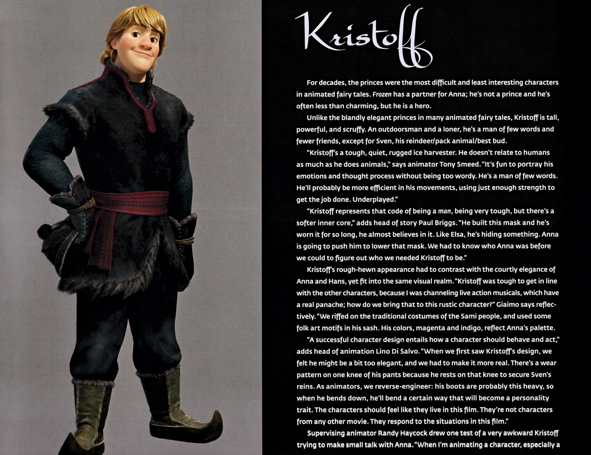
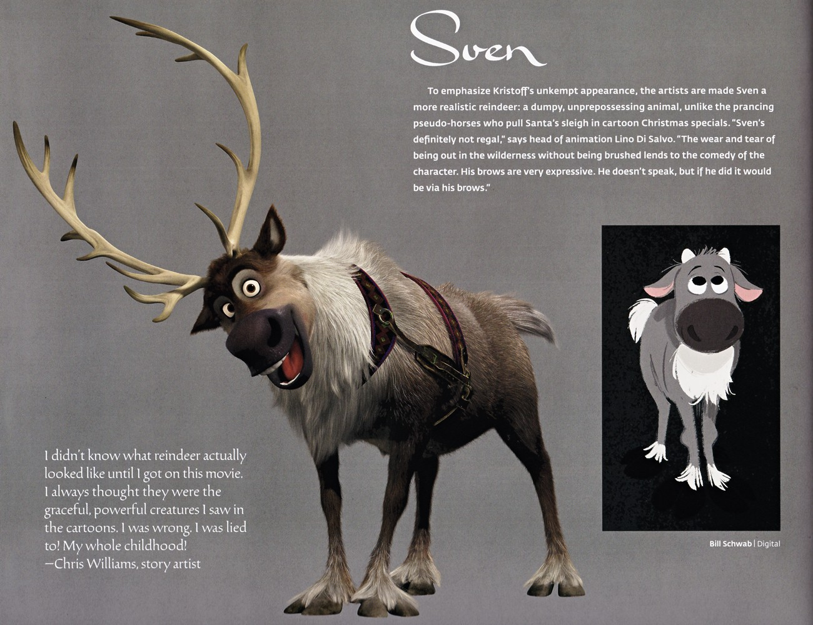
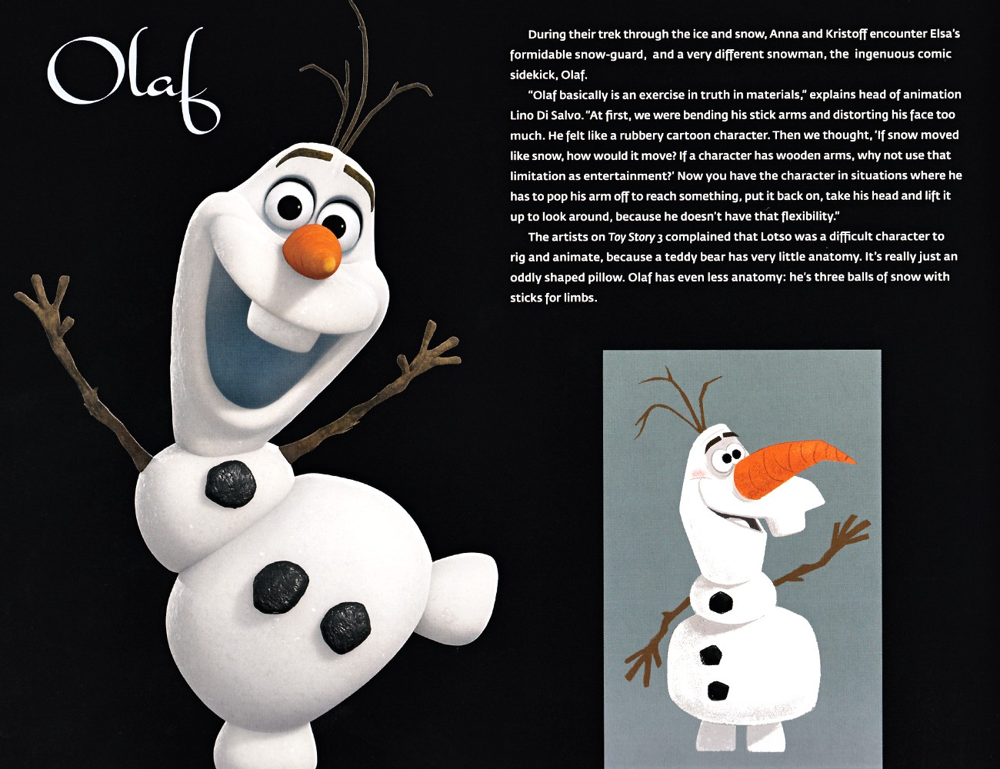
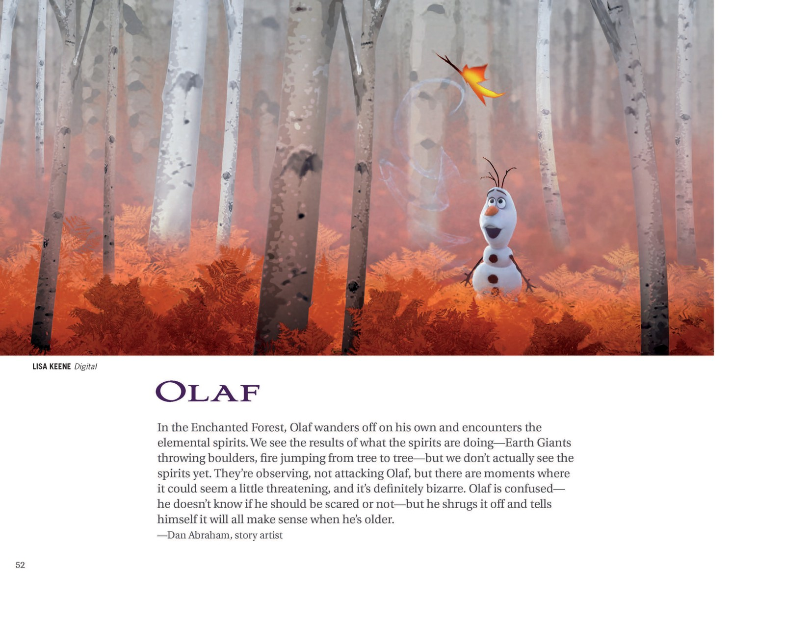
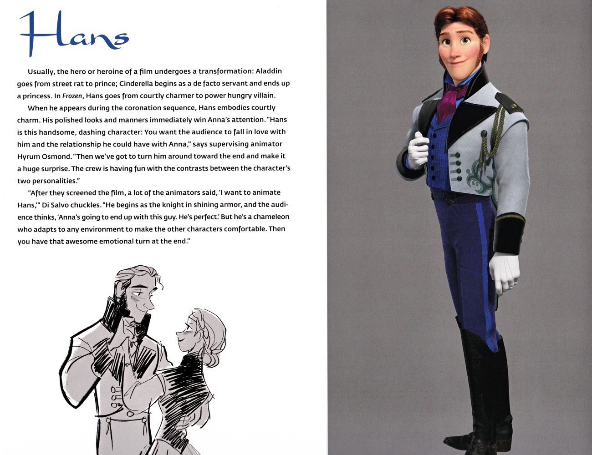
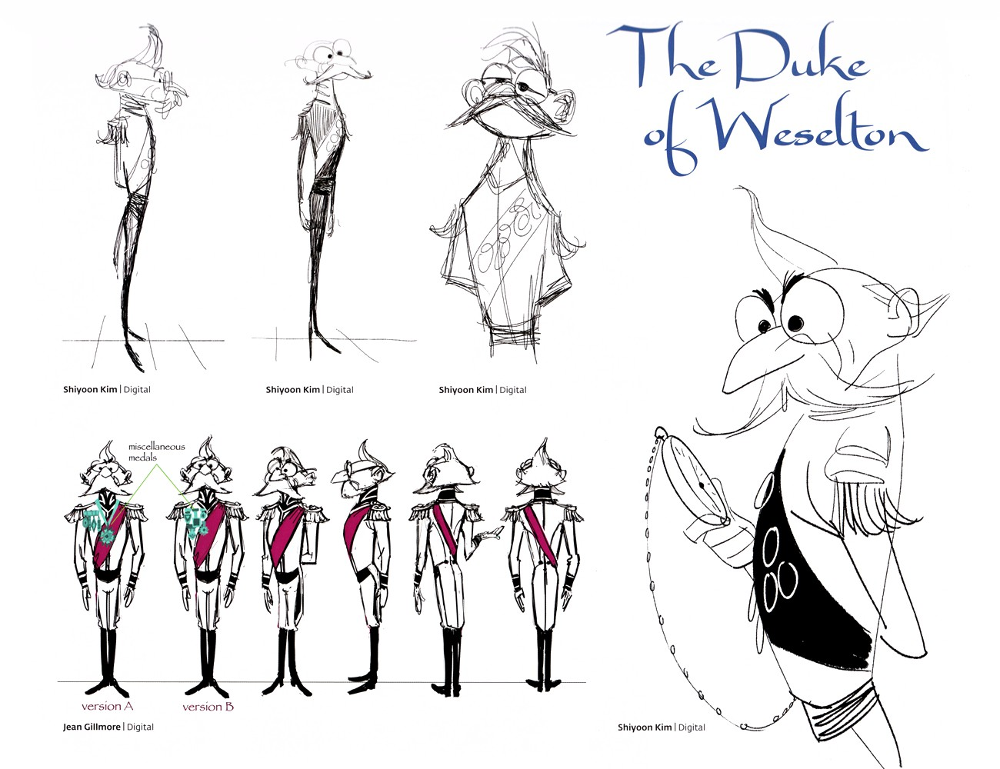

🎨 图鉴 · 角色图鉴
角色图鉴
配角设定档案
6
本卷页数
🖼️
图鉴
中/英
双语
克里斯托夫的设计参考了萨米人的传统服饰，品红与靛蓝的配色与安娜呼应；动画师用「膝盖磨损、沉重的靴子」反向推导他的性格。斯文则被刻意画成「绝不尊贵」的真实驯鹿——矮胖、未梳理、眉毛极具表现力。
👥 角色图鉴
角色图鉴
克里斯托夫、斯文、雪宝、汉斯、马蒂亚斯、叶拉娜——官方设定集里的配角设定档案。
12+
角色
12
设定页
2部
电影
原书
逐页核对
👥 除了艾莎与安娜，《冰雪奇缘》系列还拥有丰富的配角阵容。本图鉴收录官方设定集中的配角设计原页——每个角色的造型如何诞生、设计师想通过外形传达什么，都有创作团队的亲口解读。
🦌 克里斯托夫与斯文
克里斯托夫的设计参考了萨米人的传统服饰，品红与靛蓝的配色与安娜呼应；动画师用「膝盖磨损、沉重的靴子」反向推导他的性格。斯文则被刻意画成「绝不尊贵」的真实驯鹿——矮胖、未梳理、眉毛极具表现力。

克里斯托夫角色设定
「KRISTOFF」开篇：叉腰站立的全身设定与多篇访谈——粗犷少言的「普通人的英雄」，萨米族服饰与品红靛蓝配色，膝盖磨损与重靴在「反向推导」性格。

斯文角色设定
「SVEN」开篇页：艺术家刻意把斯文画成「绝不尊贵」的真实驯鹿——矮胖、未梳理、眉毛极具表现力，用荒野感衬托克里斯托夫的不修边幅。
⛄ 雪宝
雪宝遵循「材料真实感」设计理念：雪要像雪一样动、树枝手臂以限制制造趣味——于是有了断臂取物、摘头张望等经典桥段。他的夏天幻想是全片最温柔的喜剧。

雪宝角色设定开篇
「OLAF」章节起始页：三球雪人的最终渲染与「材料真实感」论述——雪要像雪一样动、树枝手臂以限制制造趣味，于是有了断臂取物、摘头张望等经典桥段。

雪宝的夏天幻想
Mac George 绘制的雪宝夏日幻想：花丛、阳光与海滩——一个雪人对夏天最天真的向往，也是他「被冻结的快乐」的注脚。

「OLAF」F2章节扉页
Lisa Keene 的秋日桦树林雪宝插画，配导演 Dan Abraham 谈雪宝的F2独旅——「When I Am Older」的成长喜剧线。
⚔️ 汉斯与威塞尔顿公爵
汉斯是「从完美绅士逆转为权力型反派」——动画师形容他如变色龙般适应任何环境，他的俊朗完美本身就是伪装。威塞尔顿公爵的瘦高怪异体型与链子上的单片眼镜，则是贪婪的视觉漫画。

汉斯角色设定开篇
「HANS」角色页：与主流「逆袭」叙事相反，汉斯是「从完美绅士逆转为权力型反派」——动画师形容他如变色龙般适应任何环境，他的俊朗完美本身就是伪装。

初遇汉斯分镜 · Sequence 5.0
Chris Williams 与 John Ripa 的分镜网格：汉斯乘马船抵港、码头相撞、满月船舷同坐、接住坠落的安娜——「第一次亲密接触」的完整节拍。

威塞尔顿公爵设计
Shihyoon Kim 的瘦高怪异体型草图 + Jean Gillmore 的转身图：胸前杂项勋章、金色肩章、品红绶带，链子上的单片眼镜是他窥探财富的标志。
🌿 巨魔与王室长辈
巨魔的数字模型从 Brittney Lee 的苔藓绿衣概念一路推进到「圆石背」定稿；王室长辈方面，设定集保留了阿格纳与伊杜娜的家族谱系图、伊杜娜的披肩纹样设计，以及早期金发王后的全家福概念画——都是正片里看不到的珍贵档案。

巨魂数字模型
Brittney Lee 与 Jim Finn 的巨魔 3D 定稿：苔藓绿衣、大耳、圆石背——一面覆满发光地衣斑点，另一面是稻草般乱发，从概念草图到数字模型的完整推进。

阿伦黛尔王室全家福
Claire Keene 的概念画：伊杜娜王后抱婴儿安娜、幼艾莎着深蓝裙、阿格纳国王着黑金礼服——值得注意的是早期设定里王后是金发。

阿格纳与伊杜娜家族谱系
Brittney Lee 绘制的家族谱系图：鲁纳德→阿格纳+伊杜娜→安娜+艾莎。设计师在姐妹身上寻找遗传线索——安娜的雀斑与赤褐发、艾莎的眼色与骨骼结构。

伊杜娜角色设定
伊杜娜的全身像与披肩纹样设计：栗色发髻、紫罗兰长裙与黑紫条纹披肩。Jennifer Lee 说她是一位把家庭放在首位的慈爱母亲，她的秘密是整段旅程的钥匙。
🌲 F2新角色
马蒂亚斯将军是被困魔法森林34年的忠诚军人，他「做对的事」的信念在最黑暗的时刻支撑了安娜；北地部族领袖叶拉娜以银发编辫与木质长杖登场——两人的设定页都把萨米文化织进了服装纹样。

马蒂亚斯将军设定
「MATTIAS」角色页：Bill Schwab 的半身像与 Griselda 的全身立绘——被困魔法森林34年的忠诚将军，他「做对的事」的信念在最黑暗的时刻支撑了安娜。

叶拉娜角色设定
「YELANA」角色页：银发编辫、面部雀斑的北地部族领袖——米白长袍镶绿松石纹样、手持木质长杖，Brittney Lee 的全身定稿与 Bill Schwab 的特写并置。
💡 设计哲学
「造型即性格」的极致是「反向推导」：动画师不问「这个角色该怎么动」，而问「他身上的痕迹说明他过了什么样的人生」——克里斯托夫的膝盖磨损、斯文的荒野气质、汉斯的完美无瑕，都是性格的物证。
📌 本页要点
你正在阅读《图鉴》卷的「角色图鉴」。本页由电影正典、官方设定集与官方小说综合梳理，可作为该主题的速查入口；右侧目录可快速跳转到本页各小节。